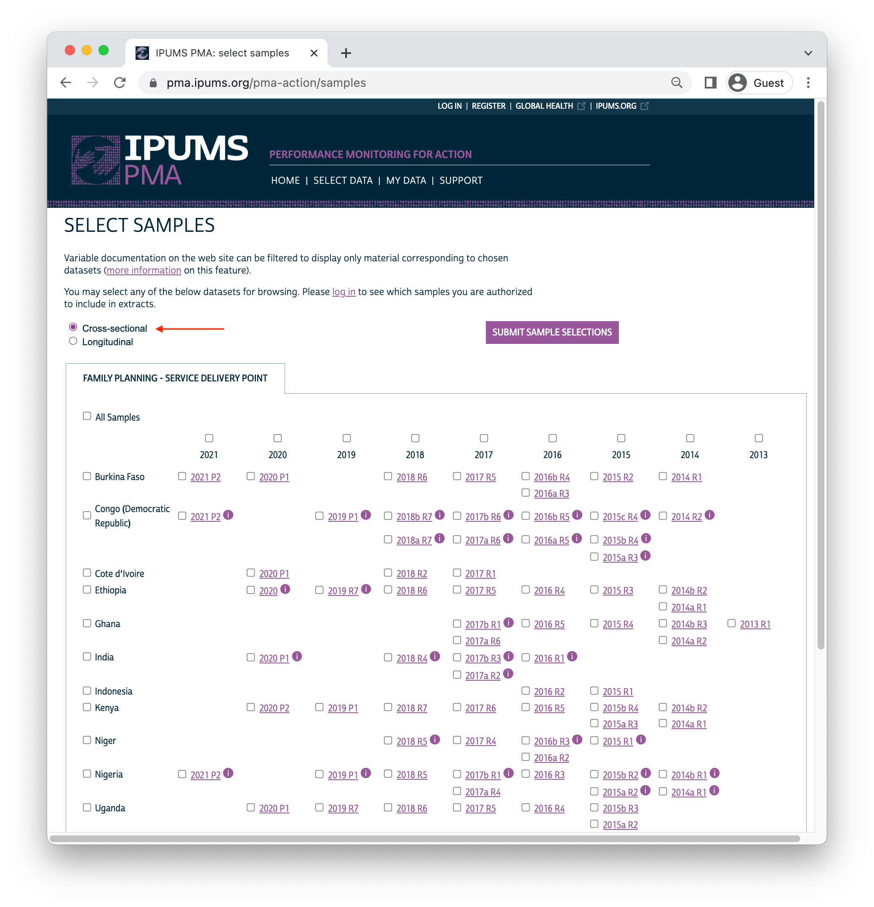
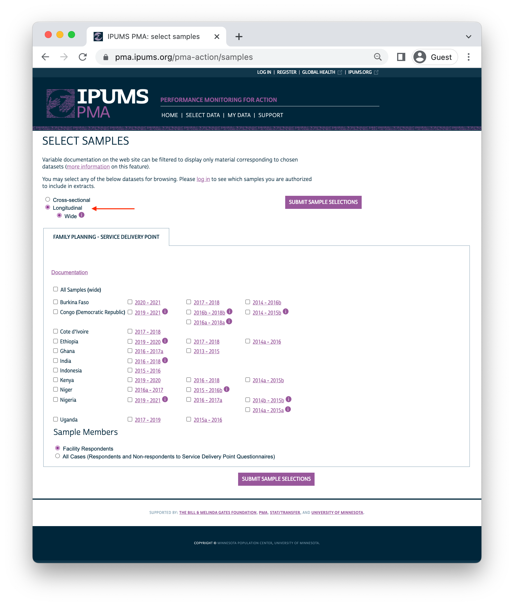
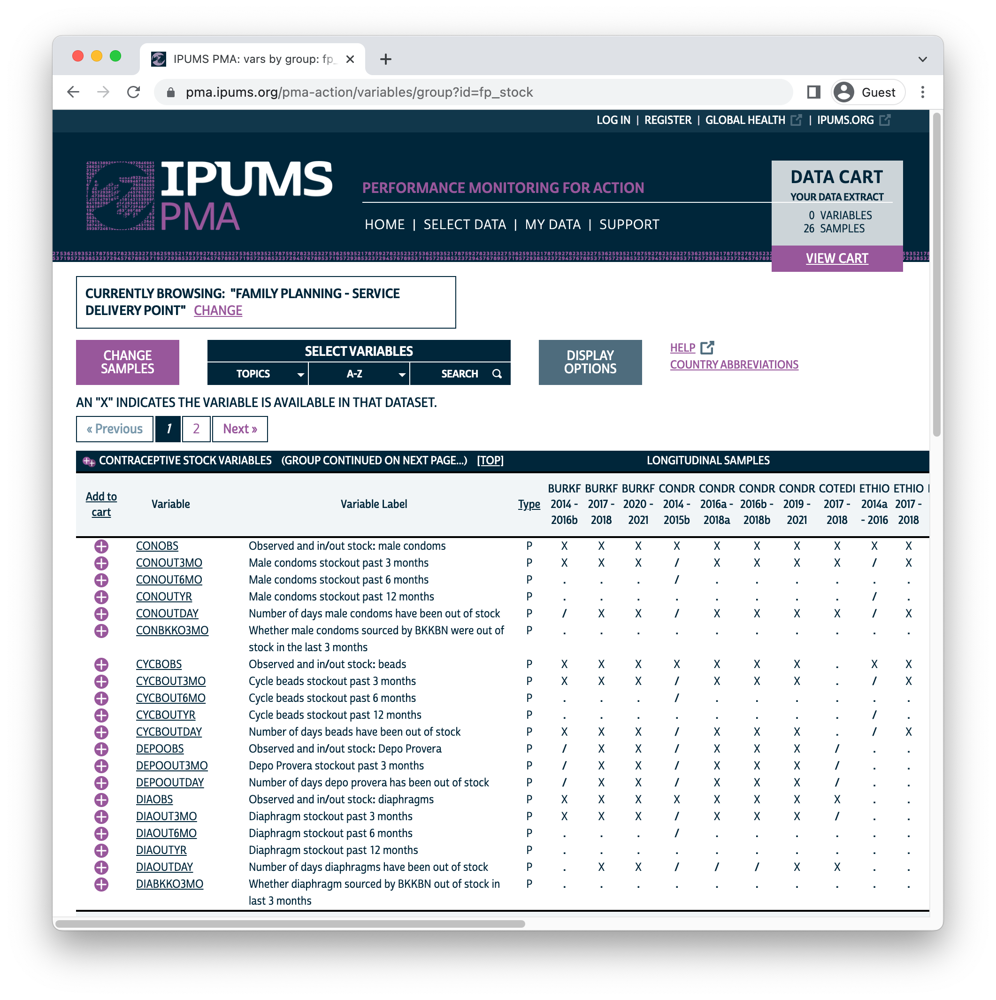
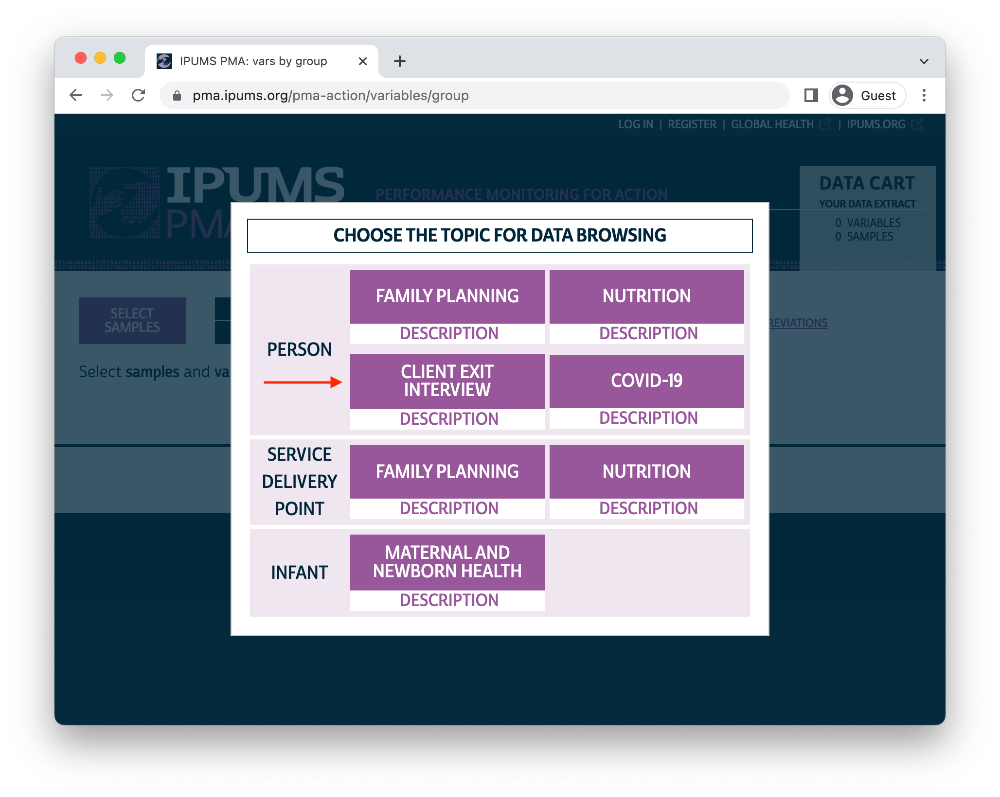
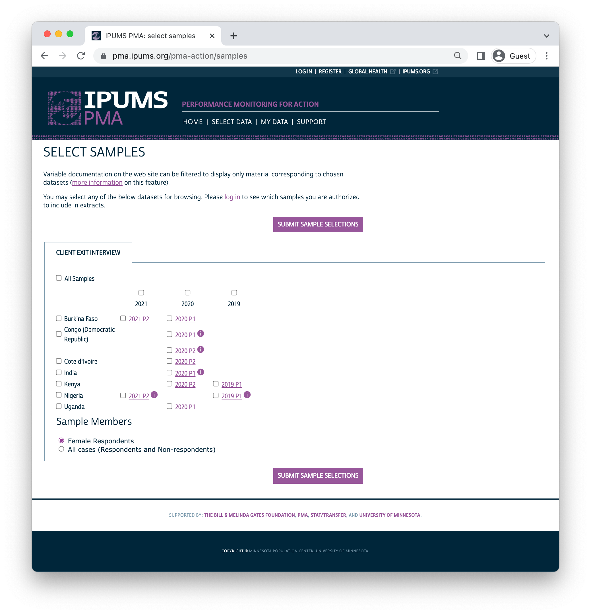

A new feature makes it easy to locate facilities surveyed in multiple rounds of SDP data collection. Plus, new Client Exit Interview data are now available!
In addition to the release of new samples from the service delivery point (SDP) and client exit interview (CEI) data series, this month IPUMS PMA is excited to announce a new feature designed to help researchers study health facilities over time.
Much like the family planning (FP) panel surveys released earlier this year, SDP data are now available in longitudinal format. That means we’ve matched responses from the same facility if it was sampled in multiple rounds of data collection. These responses are organized together in columns numbered separately for up to four rounds - in other words, longitudinal SDP data are organized with one row per facility whether it was sampled once or multiple times.
Let’s cover the new SDP data first, and then we’ll highlight new additions to the companion CEI data series.
This month’s release includes new SDP samples from eight countries collected between 2020 and 2021. As always, SDP sampling is conducted contemporaneously and in the same enumeration areas used to identify women in households sampled by FP surveys. IPUMS PMA released the contemporaneous FP surveys for each country (except Ethiopia) earlier this year. The new SDP surveys are designed to provide contextual information about the health service environment experienced by women in a corresponding FP sample; later, we will discuss how to match women with nearby facilities via EAID.
| Country | SDP Data Collection | FP Data Collection |
|---|---|---|
| Burkina Faso | Feb 2021 - Mar 2021 | Dec 2020 - Apr 2021 |
| Cote d’Ivoire | Oct 2020 - Nov 2020 | Sep 2020 - Nov 2020 |
| DRC (Kinshasa & Kongo Central) | Jan 2021 - Mar 2021 | Dec 2020 - Mar 2021 |
| Ethiopia | Nov 2020 - Jan 2021 | – |
| India (Rajasthan) | Aug 2020 - Nov 2020 | Aug 2020 - Oct 2020 |
| Kenya | Nov 2020 - Feb 2021 | Nov 2020 - Dec 2020 |
| Nigeria (Kano & Lagos) | Dec 2020 - Jan 2021 | Dec 2020 - Jan 2021 |
| Uganda | Sep 2020 - Oct 2020 | Sep 2020 - Oct 2020 |
Depending on your needs, you can still download these SDP samples in cross-sectional format. In that case, you’ll find each SDP interview in its own unique row.

With the exception of Ethiopia, all of these new SDP samples are
labelled P1 or P2 to help users match them to
a corresponding “phase” from the ongoing family planning panel study. Data
collection for the third and final phase of the panel study is currently
underway.
If you select the new longitudinal format, you’ll find SDP samples organized by cohorts, each including up to four rounds of data collection. The same enumeration areas are used in every round within any given cohort, such that the same facility might be sampled from the same enumeration area up to four times in four years.

When you download a longitudinal data extract, you’ll find one unique FACILITYID in each row, regardless of whether the facility was sampled once or multiple times. Here, we’ve created an extract containing all available samples, with “Facility Respondents” only.1 This selects facilities where the SDP interview was fully or partly completed in at least one round of data collection. The first ten records from the first country, Burkina Faso, are shown:
library(ipumsr)
library(tidyverse)
sdp <- read_ipums_micro(
ddi = "data/pma_00129.xml",
data = "data/pma_00129.dat.gz"
)
# Use labels as factor levels for the following variables (for readability)
sdp <- sdp %>%
mutate(
COUNTRY = as_factor(COUNTRY),
across(starts_with("RESULT"), as_factor)
)
sdp %>% select(COUNTRY, FACILITYID, starts_with("RESULT"))
# A tibble: 10,212 × 6
COUNTRY FACILITYID RESULTSQ_1 RESULTSQ_2 RESULTSQ_3 RESULTSQ_4
<fct> <chr+lbl> <fct> <fct> <fct> <fct>
1 Burkina Faso 7298 Completed Completed Completed Completed
2 Burkina Faso 7399 Completed Completed Completed Completed
3 Burkina Faso 7627 Completed Completed Completed Completed
4 Burkina Faso 7596 Completed Completed Completed Completed
5 Burkina Faso 7316 Completed Completed Completed Completed
6 Burkina Faso 7559 Completed Completed Completed Completed
7 Burkina Faso 7989 Completed Completed Completed Completed
8 Burkina Faso 7502 Completed Completed Partly co… Completed
9 Burkina Faso 7506 Completed Completed Completed Completed
10 Burkina Faso 7837 Completed Completed <NA> <NA>
# … with 10,202 more rowsThe variable RESULTSQ
shows the result of the interview for each round of data collection
(numbered _1 through _4). Nine of the first
ten facilities were interviewed four times, but the facility numbered
7837 was only interviewed in rounds 1 and 2. We know that
there is no record for that facility in rounds 3 and 4 because
RESULTSQ
contains the value NA.
Each round of data collection is numbered chronologically, beginning with the earliest round for the cohort. You’ll find the interview year for each round in INTSQYEAR.
sdp %>% select(COUNTRY, FACILITYID, starts_with("INTSQYEAR"))
# A tibble: 10,212 × 6
COUNTRY FACILITYID INTSQYEAR_1 INTSQYEAR_2 INTSQYEAR_3 INTSQYEAR_4
<fct> <chr+lbl> <int+lbl> <int+lbl> <int+lbl> <int+lbl>
1 Burkina… 7298 2014 2015 2016 2016
2 Burkina… 7399 2014 2015 2016 2017
3 Burkina… 7627 2014 2015 2016 2016
4 Burkina… 7596 2014 2015 2016 2017
5 Burkina… 7316 2014 2015 2016 2017
6 Burkina… 7559 2014 2015 2016 2017
7 Burkina… 7989 2014 2015 2016 2016
8 Burkina… 7502 2014 2015 2016 2016
9 Burkina… 7506 2014 2015 2016 2016
10 Burkina… 7837 2014 2015 NA NA
# … with 10,202 more rowsEach of these ten facilities are members of the same cohort from Burkina Faso, representing samples collected between 2014 and early 2017. IPUMS has created a unique ID for each cohort in the new variable SDPCOHORT. You can obtain a count of the total number of facilities included across all rounds for each cohort like so:
# A tibble: 26 × 3
COUNTRY SDPCOHORT n
<fct> <dbl> <int>
1 Burkina Faso 85401 160
2 Burkina Faso 85402 149
3 Burkina Faso 85403 247
4 Congo, Democratic Republic 18001 547
5 Congo, Democratic Republic 18002 382
6 Congo, Democratic Republic 18003 234
7 Congo, Democratic Republic 18004 427
8 Ethiopia 23101 570
9 Ethiopia 23102 500
10 Ethiopia 23103 114
# … with 16 more rowsOr, you can group_by these variables and use summarise to obtain the total number of facilities interviewed for each round:
sdp %>%
group_by(COUNTRY, SDPCOHORT) %>%
summarise(across(
starts_with("RESULTSQ"),
~sum(!is.na(.x))
))
# A tibble: 26 × 6
# Groups: COUNTRY [11]
COUNTRY SDPCOHORT RESULTSQ_1 RESULTSQ_2 RESULTSQ_3 RESULTSQ_4
<fct> <dbl> <int> <int> <int> <int>
1 Burkina Faso 85401 106 103 133 131
2 Burkina Faso 85402 130 98 0 0
3 Burkina Faso 85403 234 244 0 0
4 Congo, Democ… 18001 248 245 226 0
5 Congo, Democ… 18002 171 175 186 0
6 Congo, Democ… 18003 102 115 124 0
7 Congo, Democ… 18004 356 375 0 0
8 Ethiopia 23101 389 400 440 455
9 Ethiopia 23102 442 470 0 0
10 Ethiopia 23103 111 85 0 0
# … with 16 more rowsIndividual facilities may enter or exit their cohort any number of times. For example, it is possible that a facility might complete the SDP interview once in round one, skip round two, and then re-enter the same cohort again in round three:
sdp %>%
select(COUNTRY, SDPCOHORT, FACILITYID, starts_with("RESULTSQ")) %>%
filter(!is.na(RESULTSQ_1) & is.na(RESULTSQ_2) & !is.na(RESULTSQ_3))
# A tibble: 95 × 7
COUNTRY SDPCOHORT FACILITYID RESULTSQ_1 RESULTSQ_2 RESULTSQ_3
<fct> <dbl> <chr+lbl> <fct> <fct> <fct>
1 Burkina Faso 85401 7229 Completed <NA> Completed
2 Congo, Democ… 18001 5043 Completed <NA> Completed
3 Congo, Democ… 18001 5082 Completed <NA> Completed
4 Congo, Democ… 18001 5072 Completed <NA> Completed
5 Congo, Democ… 18001 5688 Completed <NA> Completed
6 Congo, Democ… 18001 5355 Completed <NA> Completed
7 Congo, Democ… 18001 5481 Completed <NA> Completed
8 Congo, Democ… 18001 5758 Completed <NA> Completed
9 Congo, Democ… 18001 5649 Completed <NA> Completed
10 Congo, Democ… 18001 5112 Completed <NA> Completed
# … with 85 more rows, and 1 more variable: RESULTSQ_4 <fct>Also, a facility may enter the cohort after round one.
sdp %>%
select(COUNTRY, SDPCOHORT, FACILITYID, starts_with("RESULTSQ")) %>%
filter(is.na(RESULTSQ_1) & !is.na(RESULTSQ_2))
# A tibble: 1,892 × 7
COUNTRY SDPCOHORT FACILITYID RESULTSQ_1 RESULTSQ_2 RESULTSQ_3
<fct> <dbl> <chr+lbl> <fct> <fct> <fct>
1 Burkina Faso 85401 7256 <NA> Completed <NA>
2 Burkina Faso 85401 7133 <NA> Completed <NA>
3 Burkina Faso 85402 7840 <NA> Completed <NA>
4 Burkina Faso 85402 7523 <NA> Completed <NA>
5 Burkina Faso 85402 7941 <NA> Completed <NA>
6 Burkina Faso 85402 7434 <NA> Completed <NA>
7 Burkina Faso 85402 7786 <NA> Completed <NA>
8 Burkina Faso 85402 7280 <NA> Completed <NA>
9 Burkina Faso 85402 7135 <NA> Completed <NA>
10 Burkina Faso 85402 7854 <NA> Completed <NA>
# … with 1,882 more rows, and 1 more variable: RESULTSQ_4 <fct>However, each FACILITYID appears in only one cohort. In the event that a facility is randomly selected into multiple cohorts, it would receive a new FACILITYID. It is not possible to reliably match these facilities across cohorts.
# A tibble: 1 × 2
cohort_appearences n
<int> <int>
1 1 10212Lastly, users should note that in some instances, the same FACILITYID was listed in a different enumeration area in one or more rounds. This occurs in less than 4% of cases across cohorts.
sdp %>%
select(COUNTRY, SDPCOHORT, FACILITYID, starts_with("EAID")) %>%
pivot_longer(starts_with("EAID"), values_to = "EAID") %>%
group_by(COUNTRY, SDPCOHORT, FACILITYID) %>%
summarise(ea_count = n_distinct(EAID, na.rm = TRUE), .groups = "keep") %>%
ungroup() %>%
count(ea_count > 1) %>%
mutate(prop = prop.table(n))
# A tibble: 2 × 3
`ea_count > 1` n prop
<lgl> <int> <dbl>
1 FALSE 9824 0.962
2 TRUE 388 0.0380We’ve seen that the value NA is used to represent
facilities that were interviewed fewer than four times in the
same cohort: if, for example, no interview data exists for round 4, all
variables named with the suffix _4 are marked
NA.
However, there is is second reason why you might see NA
values in a longitudinal data extract. These represent cases where the
question associated with a particular variable was changed or omitted
between rounds. For example, let’s take a look at contraceptive
stock variable group:

Certain contraceptive methods are included in every questionnaire ever administered across SDP samples, and every sample includes a question asking whether certain methods were in-stock and observed by the interviewer. So, you’ll always find the following variables available across samples:
However, some questionnaires ask about the availability of additional contraceptive methods. As a result, some samples contain additional variables like:
When you download an extract containing multiple samples, these
variables will contain NA values for samples that did not
ask about the availability of these additional methods.
Fortunately, in a longitudinal extract you’ll find that the same
OBS variables are always available for all rounds
within the same cohort. PMA might add or drop contraceptive methods
from the questionnaire administered in a particular country, but
only during a redesign period before the selection of a new
cohort.
You’ll can see this for yourself if you count the number of responses
to all of the OBS variables and compare this to the number
of facilities that completed all or part of the interview across rounds.
We’ll use pivot_longer
to showcase these counts in separate rows for each round:
sdp %>%
group_by(COUNTRY, SDPCOHORT) %>%
summarise(
across(matches("OBS") | matches("RESULT"), ~sum(!is.na(.x))),
.groups = "keep"
) %>%
pivot_longer(
-c(COUNTRY, SDPCOHORT),
names_pattern = "(.*)_(.*)",
names_to = c(".value", "ROUND")
) %>%
relocate(RESULTSQ, .after = ROUND) %>%
filter(RESULTSQ != 0)
# A tibble: 68 × 23
# Groups: COUNTRY, SDPCOHORT [26]
COUNTRY SDPCOHORT ROUND RESULTSQ CONOBS CYCBOBS DEPOOBS DIAOBS
<fct> <dbl> <chr> <int> <int> <int> <int> <int>
1 Burkina Faso 85401 1 106 106 106 0 106
2 Burkina Faso 85401 2 103 103 103 0 103
3 Burkina Faso 85401 3 133 133 133 0 133
4 Burkina Faso 85401 4 131 131 131 0 131
5 Burkina Faso 85402 1 130 130 130 130 130
6 Burkina Faso 85402 2 98 98 98 98 98
7 Burkina Faso 85403 1 234 234 234 234 234
8 Burkina Faso 85403 2 244 244 244 244 244
9 Congo, Demo… 18001 1 248 248 248 0 248
10 Congo, Demo… 18001 2 245 245 245 0 245
# … with 58 more rows, and 15 more variables: EMRGOBS <int>,
# FCOBS <int>, FJOBS <int>, IMPOBS <int>, INJOBS <int>,
# INJ1OBS <int>, INJ3OBS <int>, IUDOBS <int>, NTABOBS <int>,
# OTHEROBS <int>, PILLOBS <int>, PROPILLOBS <int>, SAYOBS <int>,
# MIFEOBS <int>, MISOBS <int>Again, let’s focus our attention on the first cohort numbered
85401 from Burkina Faso, which includes data collected in
four rounds. In the first round, 106 facilities completed all or part of
the questionnaire (RESULTSQ),
and every one of those facilities answered a question about
contraceptive stock. That question included male condoms (CONOBS),
beads (CYCBOBS),
diaphragms (DEPOOBS),
and more. However, it did not ask about Depo Provera, which is why DEPOOBS
shows zero non-NA values.
Moving downward, you see that DEPOOBS
shows zero non-NA values in every round for cohort
85401. That’s because the associated question was not
modified until the redesign period following round four.
Then, a new cohort numbered 85402 was drawn from a new
set of enumeration areas, and the questionnaire was adjusted to include
Depo Provera. No further adjustments were made after round one was
completed for cohort 85402: Depo Provera appears again in
the second and final round.
If you were to continue exploring this table, you would find that the
value 0 appears consistently for all variables in all
rounds for any given cohort.
In the coming weeks, we’ll continue exploring longitudinal SDP data as a way to understand how facilities adapt in response to shifting markets, policies, and even climate conditions. However, we urge users to remember that SDP surveys are not collected through random sampling: they should not be used to estimate population-level statistics for health service providers on a national or sub-national scale.
Instead, we’ll show how to use SDP data as contextual information for women and households sampled in PMA family planning surveys. That’s because SDP samples are constructed to include up to three public-sector and three private-sector facilities serving each enumeration area included in a contemporaneous family planning sample. SDP data are intended to represent the health service environment experienced by the women included in these samples.
CEI surveys are a relatively new addition to PMA, so you’ll find samples available from 2020 onward. They represent interviews with actual clients visiting facilities included in a contemporaneous SDP sample. These clients are women from the community who sought family planning services or products at the facility during a two-day data collection period.
This data release includes CEI samples corresponding with many of the same SDP samples we mentioned above:
| Country | SDP Data Collection | CEI Data Collection |
|---|---|---|
| Burkina Faso | Feb 2021 - Mar 2021 | Feb 2021 - Mar 2021 |
| Cote d’Ivoire | Oct 2020 - Nov 2020 | Oct 2020 - Nov 2020 |
| DRC (Kinshasa & Kongo Central) | Jan 2021 - Mar 2021 | Feb 2021 - Mar 2021 |
| Ethiopia | Nov 2020 - Jan 2021 | – |
| India (Rajasthan) | Aug 2020 - Nov 2020 | – |
| Kenya | Nov 2020 - Feb 2021 | Dec 2020 - Mar 2021 |
| Nigeria (Kano & Lagos) | Dec 2020 - Jan 2021 | Dec 2020 - Jan 2021 |
| Uganda | Sep 2020 - Oct 2020 | – |
You’ll find CEI data on the IPUMS PMA website if select Client Exit Interview in the unit of analysis menu.

For now, CEI surveys are only available in cross-sectional format. However, we’ll demonstrate how to link them together with longitudinal SDP data in an upcoming post.

As we’ll see in the coming weeks, CEI surveys offer an important way to measure whether and how facilities meet family planning needs for women in the communities they serve. In turn, both surveys help to describe the health service environment experienced by women in FP surveys, including those participating the new PMA panel study we’ve been describing in our most recent series on this blog. We’ll be focusing much more on ways to integrate all three of these surveys together throughout this summer.
Alternatively, you may request an extract containing “All Cases”, which includes records for facilities where SDP respondent declined or was unable to complete all or part of the interview.↩︎
If you see mistakes or want to suggest changes, please create an issue on the source repository.